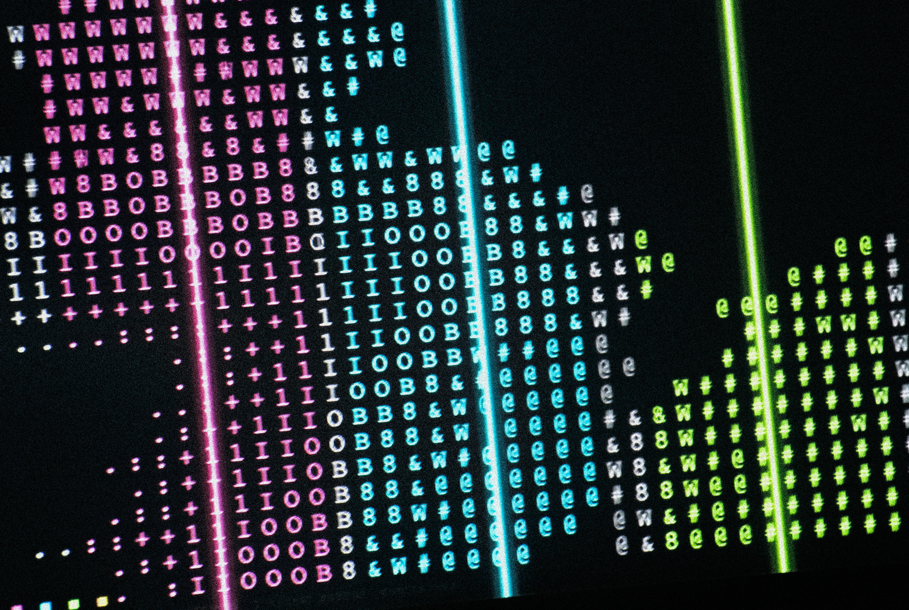
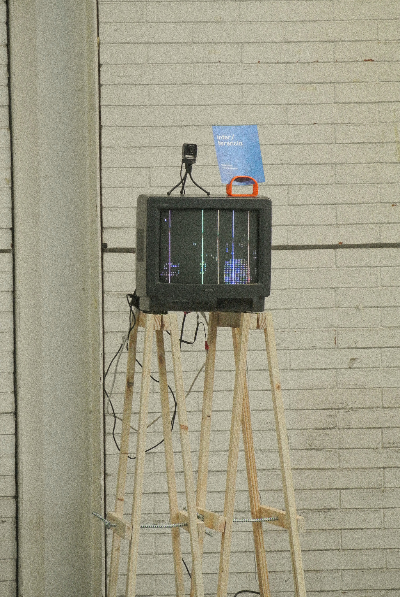
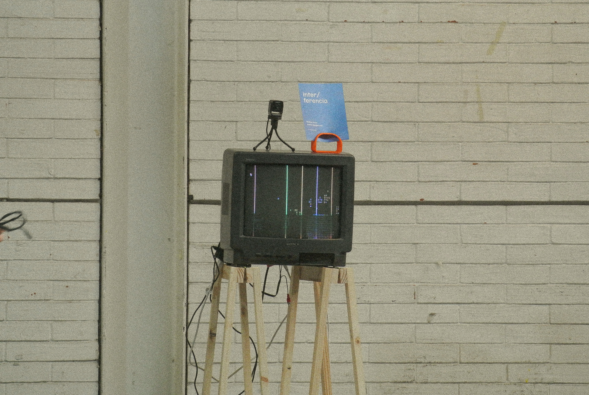
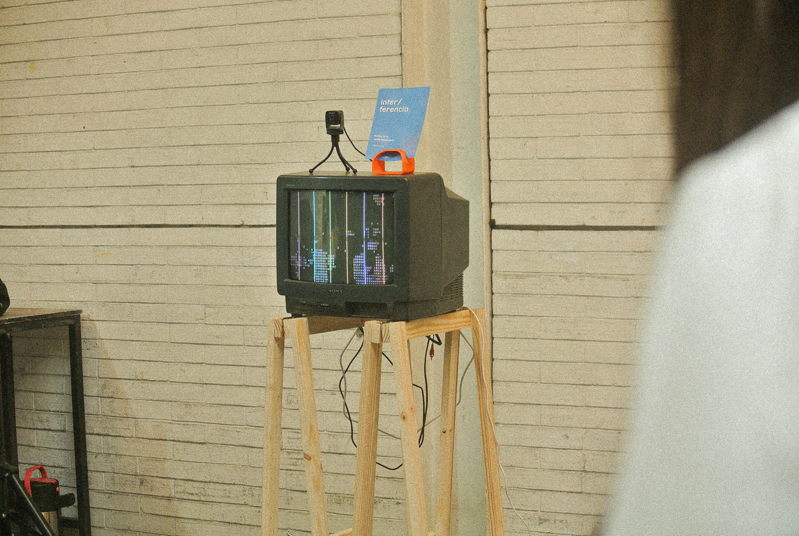
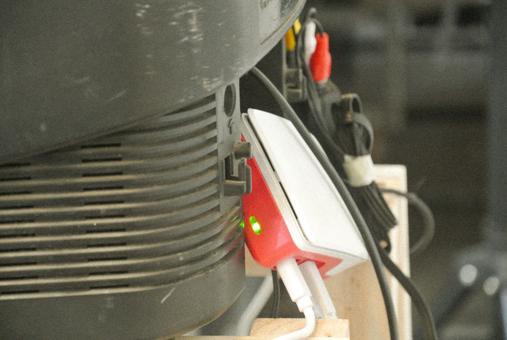
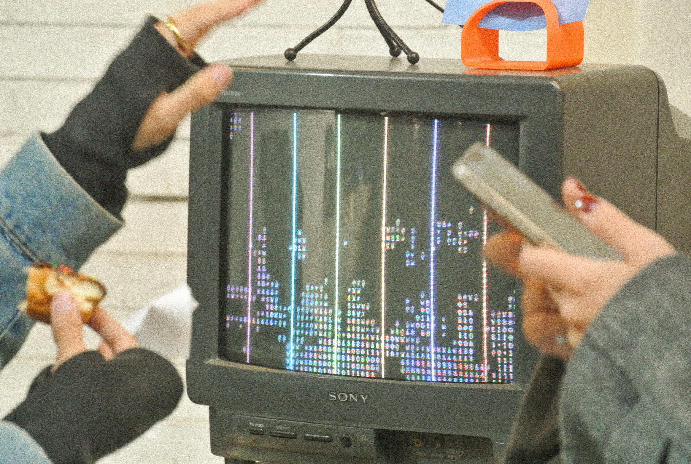
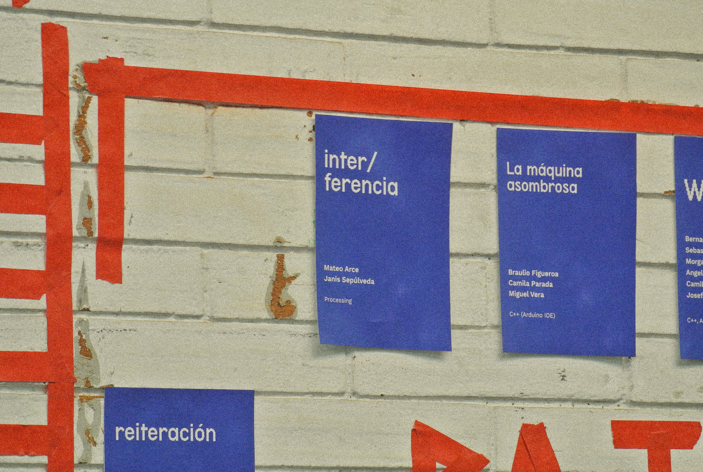
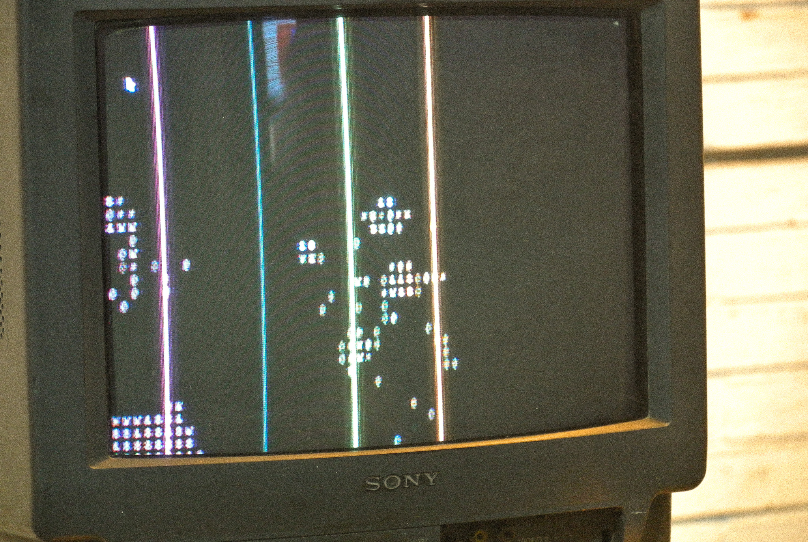
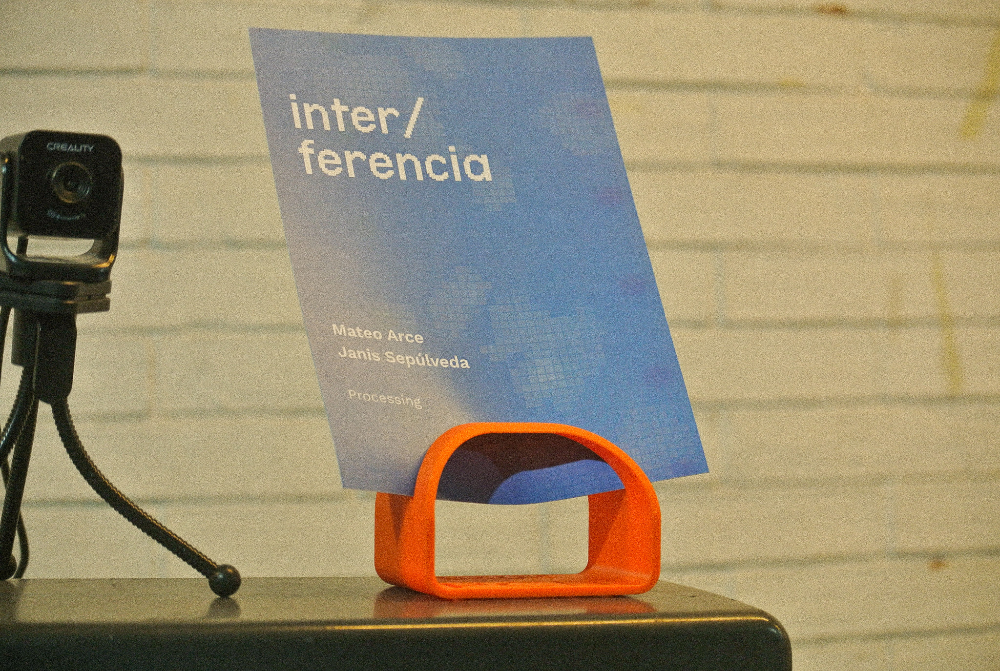
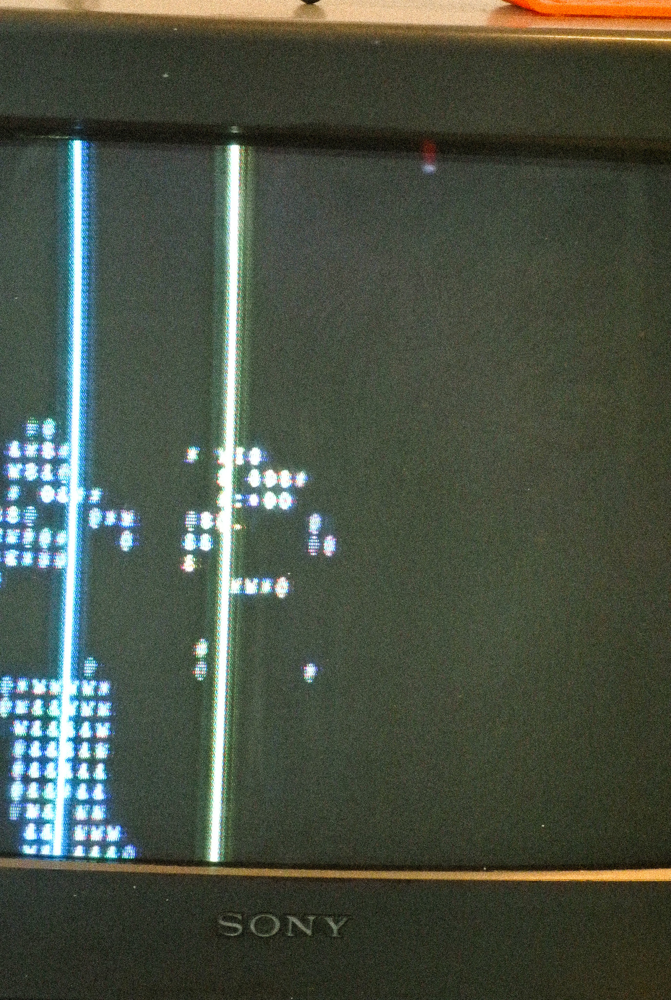

Inter-Ferencia
2026
Instalacion interactiva hecha en Processing con webcam, vision computacional
y sonido. El sistema captura el fondo, detecta la silueta de las personas
como diferencia de imagen, la traduce a caracteres ASCII y dispara notas
cuando el cuerpo cruza seis barras invisibles en la pantalla.
Codigo fuente aqui.
Codigo fuente aqui.









